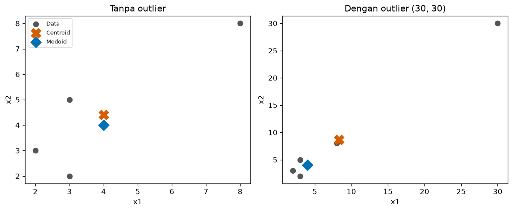
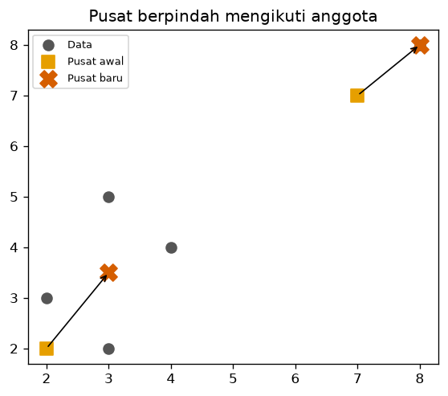
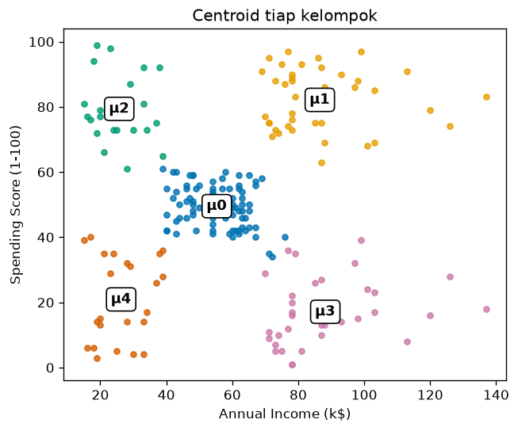

Bab 3 — Centroid and Cluster Representation¶
Learning Objectives¶
Setelah mempelajari bab ini, kamu mampu:
- Menjelaskan apa itu centroid dan mengapa ia dipakai untuk mewakili sebuah kelompok.
- Menghitung centroid data numerik secara manual dan dengan NumPy.
- Menjelaskan perbedaan centroid dan medoid.
- Menjelaskan mengapa centroid sensitif terhadap outlier sedangkan medoid lebih tahan.
- Menjelaskan bagaimana posisi centroid berubah ketika anggota kelompok berubah.
- Memvisualisasikan centroid dengan Matplotlib dan menafsirkannya sebagai profil kelompok.
Introduction¶
Di Bab 1 dan 2 kita sudah beberapa kali menyebut "pusat kelompok" (tanda X pada grafik). Sekarang kita membahasnya dengan teliti.
Bayangkan sebuah kelompok berisi 81 pelanggan. Kamu tidak mungkin membacakan 81 baris data kepada manajer. Kamu butuh satu titik yang mewakili kelompok itu: "pelanggan tipikal di kelompok ini berpendapatan 55 dan bernilai belanja 49". Titik wakil inilah yang dipelajari di bab ini.
Wakil kelompok punya dua kegunaan utama:
- Menafsirkan. Ia meringkas ciri kelompok dalam satu baris angka.
- Menentukan keanggotaan. Banyak algoritma memasukkan titik baru ke kelompok yang wakilnya paling dekat (Bab 2). Level 4 membahasnya mendalam.
Fundamental Concepts¶
| Istilah | Arti |
|---|---|
| Centroid | Titik rata-rata semua anggota kelompok. Belum tentu berimpit dengan data asli |
| Medoid | Anggota kelompok yang paling sentral: jumlah jaraknya ke anggota lain paling kecil. Selalu merupakan data asli |
| Representative point | Istilah umum untuk titik wakil kelompok: bisa centroid, medoid, atau titik lain |
| Mean | Rata-rata hitung. Centroid adalah mean yang dihitung per fitur |
| Outlier | Data yang jauh berbeda dari kebanyakan data lain (Level 2 Bab 7) |
Mengapa disebut "pusat massa"
Bayangkan tiap titik data sebagai kelereng berbobot sama di atas papan tipis. Titik tempat papan seimbang di ujung jari adalah centroid, sama seperti pusat massa dalam fisika.
Detailed Explanation¶
Centroid: rata-rata per fitur¶
Cara mencari centroid sederhana: rata-ratakan setiap fitur secara terpisah. Jika tiap titik punya dua fitur (pendapatan dan skor belanja), centroid juga punya dua angka: rata-rata pendapatan dan rata-rata skor belanja.
Contoh: tiga pelanggan dengan (pendapatan, skor) = (2, 3), (4, 4), dan (6, 5). Rata-rata pendapatan: \( (2+4+6)/3 = 4 \). Rata-rata skor: \( (3+4+5)/3 = 4 \). Centroid-nya \( (4, 4) \).
Perhatikan bahwa centroid boleh jatuh di tempat yang tidak ada datanya. Kalau data kita (1, 1) dan (3, 3), centroid-nya (2, 2) walau tidak ada pelanggan di sana. Itu wajar: ia adalah titik wakil, bukan anggota.
Medoid: anggota yang paling sentral¶
Medoid adalah anggota kelompok yang jumlah jaraknya ke semua anggota lain paling kecil. Ia selalu berupa data nyata. Ini bermanfaat ketika:
- Rata-rata tidak bermakna (misalnya data kategori: "rata-rata" dari Female dan Male tidak ada artinya).
- Kamu ingin mencontohkan kelompok dengan satu kasus nyata ("pelanggan nomor 57 mewakili kelompok ini").
- Data punya outlier yang tidak ingin kamu biarkan menarik wakil kelompok.
Centroid vs medoid¶
| Centroid | Medoid | |
|---|---|---|
| Cara hitung | Rata-rata tiap fitur | Anggota dengan jumlah jarak terkecil |
| Berupa data asli? | Belum tentu | Selalu |
| Tahan outlier? | Tidak, tertarik ke outlier | Ya, lebih stabil |
| Biaya hitung | Murah | Lebih mahal (butuh semua pasangan jarak) |
| Data kategori | Tidak cocok | Bisa, selama ada ukuran jarak |
| Dipakai oleh | K-Means (Level 4) | K-Medoids (Level 4) |
flowchart TD
A[Kelompok titik data] --> B{Cara memilih wakil}
B -->|Rata-rata tiap fitur| C[Centroid<br/>bisa di luar data]
B -->|Anggota paling sentral| D[Medoid<br/>selalu data asli]Centroid berpindah ketika anggota berubah¶
Centroid ditentukan oleh anggotanya. Jika anggota bertambah, berkurang, atau berpindah kelompok, centroid ikut bergeser. Banyak algoritma memanfaatkan ini: tebak pusat → tentukan anggota → hitung ulang pusat → ulangi. Pada Python Implementation kita menjalankan satu putaran saja agar kamu melihat pergeseran pusatnya. Algoritma lengkapnya (K-Means) dibahas di Level 4.
Pusat sebagai profil kelompok¶
Centroid pada data bisa dibaca sebagai profil: "pelanggan tipikal kelompok ini". Pada Bab 1 kita menafsirkan rata-rata tiap kelompok sebagai profil, dan ternyata itu persis centroid-nya. Kita membuktikannya dengan kode di bawah.
Mathematical Foundation¶
Misalkan kelompok \( C \) berisi \( n \) titik \( \mathbf{x}_1, \mathbf{x}_2, \dots, \mathbf{x}_n \), dengan tiap \( \mathbf{x}_i \) berisi \( d \) angka (satu per fitur). Centroid \( \mu \) adalah:
Penjelasan simbol:
- \( n \) adalah jumlah anggota kelompok.
- \( \mathbf{x}_i \) adalah anggota ke-\( i \). Huruf tebal berarti ia berisi beberapa angka (satu per fitur).
- \( \sum_{i=1}^{n} \) berarti "jumlahkan dari \( i = 1 \) sampai \( i = n \)". Penjumlahan titik dilakukan per fitur.
- \( \frac{1}{n} \) membagi hasil jumlah dengan banyaknya anggota. Hasilnya rata-rata.
- Untuk fitur ke-\( j \), rumusnya menjadi \( \mu_j = \frac{1}{n} \sum_{i=1}^{n} x_{ij} \).
Medoid \( \mathbf{m} \) adalah anggota yang meminimalkan jumlah jarak ke semua anggota lain:
- \( \arg\min \) berarti "ambil argumen yang menghasilkan nilai terkecil", yaitu titik \( \mathbf{x}_a \), bukan nilainya.
- \( \lVert \mathbf{x}_a - \mathbf{x}_b \rVert \) adalah jarak Euclidean (Bab 5). Untuk dua dimensi: \( \sqrt{(x_{a1}-x_{b1})^2 + (x_{a2}-x_{b2})^2} \).
Contoh hitung manual: centroid¶
Lima pelanggan: \( P_1 = (2,3) \), \( P_2 = (3,5) \), \( P_3 = (4,4) \), \( P_4 = (3,2) \), \( P_5 = (8,8) \).
- Jumlah fitur pertama: \( 2 + 3 + 4 + 3 + 8 = 20 \).
- Jumlah fitur kedua: \( 3 + 5 + 4 + 2 + 8 = 22 \).
- Bagi dengan \( n = 5 \): \( \mu_1 = 20/5 = 4 \) dan \( \mu_2 = 22/5 = 4{,}4 \).
Centroid-nya \( (4;\ 4{,}4) \). Perhatikan bahwa tidak ada pelanggan di titik itu.
Contoh hitung manual: medoid¶
Jumlah jarak sebuah titik ke keempat titik lain. Untuk \( P_3 = (4,4) \):
- Ke \( P_1 \): \( \sqrt{(4-2)^2 + (4-3)^2} = \sqrt{5} \approx 2{,}236 \)
- Ke \( P_2 \): \( \sqrt{(4-3)^2 + (4-5)^2} = \sqrt{2} \approx 1{,}414 \)
- Ke \( P_4 \): \( \sqrt{(4-3)^2 + (4-2)^2} = \sqrt{5} \approx 2{,}236 \)
- Ke \( P_5 \): \( \sqrt{(4-8)^2 + (4-8)^2} = \sqrt{32} \approx 5{,}657 \)
Jumlahnya \( 2{,}236 + 1{,}414 + 2{,}236 + 5{,}657 \approx 11{,}54 \). Dengan cara yang sama, jumlah jarak \( P_1 \) kira-kira 13,70 (\( \sqrt{5} + \sqrt{5} + \sqrt{2} + \sqrt{61} \)). Titik dengan jumlah terkecil adalah medoid. Kita lihat hasil lengkapnya di bagian Python.
Interpretasi. Centroid (4; 4,4) agak tertarik ke arah \( P_5 = (8,8) \) yang jauh. Medoid adalah salah satu anggota nyata, yang paling "di tengah" dalam arti jarak.
Python Implementation¶
Kita kerjakan dalam tujuh langkah kecil. Setiap potongan kode diikuti penjelasannya. Skrip lengkapnya ada di examples/level-3/03_centroid_and_representation.py, dan versi notebook-nya di notebooks/level-3/03-centroid-and-cluster-representation.ipynb.
Konteks masalah: kita menghitung centroid dan medoid lima titik, melihat pengaruh outlier, melihat pergeseran pusat, lalu membuktikan bahwa centroid kelompok Mall Customers sama dengan rata-rata anggotanya.
Input yang diharapkan: data kecil dibuat di kode. Langkah 6 memakai data/mall_customers.csv.
Langkah 1 — Siapkan data kecil¶
import numpy as np
import pandas as pd
import matplotlib.pyplot as plt
from sklearn.cluster import KMeans
# Lima pelanggan kecil: (pendapatan, skor belanja)
points = np.array([[2, 3], [3, 5], [4, 4], [3, 2], [8, 8]], dtype=float)
names = ["P1", "P2", "P3", "P4", "P5"]
print(pd.DataFrame(points, index=names, columns=["x1", "x2"]))
Penjelasan:
import numpy as np,pandas as pd, danmatplotlib.pyplot as pltmemanggil tiga pustaka dengan nama singkat.KMeanskita pakai di Langkah 6.np.array([[2, 3], [3, 5], ...], dtype=float)membuat larik dua dimensi: tiap baris satu pelanggan, tiap kolom satu fitur.dtype=floatmembuat angkanya desimal agar hasil rata-rata tidak terpotong.namesadalah daftar nama titik agar output mudah dibaca.pd.DataFrame(points, index=names, columns=[...])menampilkan larik sebagai tabel berlabel.
Langkah 2 — Hitung centroid¶
n = len(points)
centroid = points.sum(axis=0) / n
print("Jumlah per kolom:", points.sum(axis=0))
print("Jumlah titik n :", n)
print("Centroid :", centroid)
print("Sama dengan points.mean(axis=0)?", np.allclose(centroid, points.mean(axis=0)))
Penjelasan:
n = len(points)memberi jumlah baris (jumlah titik), yaitu 5.points.sum(axis=0)menjumlahkan turun per kolom.axis=0berarti "sepanjang baris", sehingga hasilnya satu jumlah per fitur:[20, 22].- Membaginya dengan
nmemberi rata-rata tiap fitur, yaitu centroid. Ini sama persis dengan rumus \( \mu = \frac{1}{n}\sum \mathbf{x}_i \). np.allclose(a, b)memeriksa apakah dua larik sama (dengan toleransi pembulatan). Kita membandingkan denganpoints.mean(axis=0), cara singkat NumPy untuk hal yang sama.
Langkah 3 — Hitung medoid¶
def distance_matrix(X):
diff = X[:, None, :] - X[None, :, :]
return np.sqrt((diff ** 2).sum(axis=2))
D = distance_matrix(points)
total = D.sum(axis=1)
medoid_index = total.argmin()
print("Jumlah jarak tiap titik ke semua titik lain:")
for name, value in zip(names, total.round(2)):
print(f" {name}: {value}")
print("Medoid:", names[medoid_index], points[medoid_index])
Penjelasan:
distance_matrix(X)adalah fungsi yang menghitung jarak setiap titik ke setiap titik lain. Hasilnya tabel \( n \times n \) (disebut matriks jarak, dibahas di Bab 4).X[:, None, :] - X[None, :, :]menghitung selisih semua pasangan sekaligus lewat broadcasting.** 2,.sum(axis=2), dannp.sqrtmengubah selisih itu menjadi jarak Euclidean.D.sum(axis=1)menjumlahkan jarak per baris: untuk tiap titik, berapa jumlah jaraknya ke semua titik lain.total.argmin()memberi nomor baris dengan jumlah terkecil. Itulah medoid.zip(names, total.round(2))memasangkan nama dan nilai agar bisa dicetak berdampingan.
Langkah 4 — Efek outlier¶
with_outlier = np.vstack([points, [[30, 30]]])
c_before = points.mean(axis=0)
c_after = with_outlier.mean(axis=0)
D2 = distance_matrix(with_outlier)
medoid_after = with_outlier[D2.sum(axis=1).argmin()]
print("Centroid sebelum outlier:", c_before.round(2))
print("Centroid sesudah outlier:", c_after.round(2))
print("Medoid sebelum outlier :", points[medoid_index])
print("Medoid sesudah outlier :", medoid_after)
Penjelasan:
np.vstack([points, [[30, 30]]])menumpuk satu baris baru (titik (30, 30)) di bawah data lama. Titik ini sengaja jauh: sebuah outlier.- Kita hitung ulang centroid dan medoid pada data baru, lalu membandingkannya dengan hasil sebelum outlier ditambahkan.
Langkah 5 — Centroid berpindah¶
start = np.array([[2.0, 2.0], [7.0, 7.0]]) # dua tebakan pusat awal
print("Pusat awal:\n", start)
d = np.sqrt(((points[:, None, :] - start[None, :, :]) ** 2).sum(axis=2))
assign = d.argmin(axis=1)
print("Kelompok tiap titik:", dict(zip(names, assign.tolist())))
new_centers = np.array([points[assign == k].mean(axis=0) for k in range(2)])
print("Pusat baru (rata-rata anggota):\n", new_centers)
print("Pergeseran pusat:", np.sqrt(((new_centers - start) ** 2).sum(axis=1)).round(2))
Penjelasan:
startadalah dua tebakan pusat awal: (2, 2) dan (7, 7).points[:, None, :] - start[None, :, :]menghitung jarak setiap titik ke kedua tebakan pusat. Hasildberukuran (5 titik) × (2 pusat).d.argmin(axis=1)memilih, untuk tiap titik, nomor pusat terdekat. Itulah keanggotaan.points[assign == k].mean(axis=0)menghitung rata-rata anggota kelompokk, yaitu centroid baru.- Baris terakhir menghitung seberapa jauh tiap pusat bergeser dari tebakan awalnya.
Ini hanya satu putaran
Kita memakai langkah "tentukan anggota lalu hitung ulang pusat" sekali untuk memperlihatkan pergeseran. Pada algoritma K-Means di Level 4, langkah ini diulang sampai pusat tidak banyak berubah.
Langkah 6 — Centroid pada Mall Customers¶
df = pd.read_csv("data/mall_customers.csv")
cols = ["Annual Income (k$)", "Spending Score (1-100)"]
model = KMeans(n_clusters=5, n_init=10, random_state=42).fit(df[cols])
df["Cluster"] = model.labels_
by_mean = df.groupby("Cluster")[cols].mean()
print("Rata-rata per kelompok (groupby):")
print(by_mean.round(2))
print("\nCentroid dari KMeans:")
print(pd.DataFrame(model.cluster_centers_, columns=cols).round(2))
print("\nSama?", np.allclose(by_mean.to_numpy(), model.cluster_centers_))
Penjelasan:
- Kita memuat data dan melakukan clustering seperti Bab 1.
df.groupby("Cluster")[cols].mean()menghitung rata-rata tiap kelompok dengan pandas.model.cluster_centers_adalah centroid yang dihitung K-Means.np.allclose(...)membuktikan keduanya sama. Jadi "rata-rata anggota" dan "centroid" adalah hal yang sama.pd.DataFrame(model.cluster_centers_, columns=cols)membungkus larik menjadi tabel berlabel.
Langkah 7 — Visualisasi¶
fig, axes = plt.subplots(1, 2, figsize=(10, 4.2))
for ax, pts, title in [
(axes[0], points, "Tanpa outlier"),
(axes[1], with_outlier, "Dengan outlier (30, 30)"),
]:
c = pts.mean(axis=0)
m = pts[distance_matrix(pts).sum(axis=1).argmin()]
ax.scatter(pts[:, 0], pts[:, 1], s=50, color="#555555", label="Data")
ax.scatter(*c, marker="X", s=180, color="#D55E00", label="Centroid")
ax.scatter(*m, marker="D", s=110, color="#0072B2", label="Medoid")
ax.set_title(title)
ax.set_xlabel("x1")
ax.set_ylabel("x2")
axes[0].legend(fontsize=8, loc="upper left")
fig.tight_layout()
plt.show()
fig, ax = plt.subplots(figsize=(5.5, 4.5))
ax.scatter(points[:, 0], points[:, 1], s=60, color="#555555", label="Data")
ax.scatter(start[:, 0], start[:, 1], marker="s", s=100, color="#E69F00", label="Pusat awal")
ax.scatter(new_centers[:, 0], new_centers[:, 1], marker="X", s=160, color="#D55E00", label="Pusat baru")
for i in range(2):
ax.annotate("", xy=new_centers[i], xytext=start[i], arrowprops=dict(arrowstyle="->", color="black"))
ax.set_title("Pusat berpindah mengikuti anggota")
ax.legend(fontsize=8)
plt.show()
colors = ["#0072B2", "#E69F00", "#009E73", "#CC79A7", "#D55E00"]
fig, ax = plt.subplots(figsize=(6, 4.8))
for k in range(5):
sub = df[df["Cluster"] == k]
ax.scatter(sub[cols[0]], sub[cols[1]], s=18, color=colors[k], alpha=0.8)
cx, cy = model.cluster_centers_[k]
ax.annotate(f"μ{k}", (cx, cy), fontsize=11, weight="bold", ha="center", va="center",
bbox=dict(boxstyle="round", fc="white", ec="black"))
ax.set_xlabel(cols[0])
ax.set_ylabel(cols[1])
ax.set_title("Centroid tiap kelompok")
plt.show()
Penjelasan:
- Grafik pertama membandingkan data tanpa outlier dan dengan outlier. Centroid digambar sebagai
Xoranye dan medoid sebagai berlian biru. - Grafik kedua menggambar tebakan pusat awal (kotak), pusat baru (tanda
X), dan panah pergeseran memakaiax.annotate("", xy=..., xytext=..., arrowprops=...). - Grafik ketiga menandai centroid tiap kelompok Mall Customers dengan label \( \mu_0 \) sampai \( \mu_4 \) di dalam kotak putih (
bbox=...) agar terbaca di atas titik. marker="X"danmarker="D"memilih bentuk tanda,s=ukuran, danalpha=transparansi.
Code Explanation¶
| Yang kamu lihat | Artinya |
|---|---|
points.sum(axis=0) / n |
Rumus centroid: jumlah per fitur dibagi jumlah titik |
points.mean(axis=0) |
Cara singkat menghitung hal yang sama |
D.sum(axis=1).argmin() |
Mencari medoid: baris dengan jumlah jarak terkecil |
.argmin(axis=1) pada jarak ke pusat |
Keanggotaan: pusat terdekat |
points[assign == k].mean(axis=0) |
Centroid baru untuk kelompok k |
Pola umumnya: jarak → pilih yang terdekat → rata-ratakan anggota. Ini fondasi hampir semua algoritma berbasis pusat.
How to Run¶
Jalankan dari folder utama proyek:
Skrip membuat tiga gambar di docs/assets/level-3/. Untuk notebook:
Expected Output¶
Output berikut berasal dari eksekusi nyata skrip di atas (Python 3.14.10, NumPy 2.5.2, pandas 3.0.5, scikit-learn 1.9.0, matplotlib 3.11.1):
x1 x2
P1 2.0 3.0
P2 3.0 5.0
P3 4.0 4.0
P4 3.0 2.0
P5 8.0 8.0
Jumlah per kolom: [20. 22.]
Jumlah titik n : 5
Centroid : [4. 4.4]
Sama dengan points.mean(axis=0)? True
Jumlah jarak tiap titik ke semua titik lain:
P1: 13.7
P2: 12.48
P3: 11.54
P4: 14.46
P5: 27.11
Medoid: P3 [4. 4.]
Centroid sebelum outlier: [4. 4.4]
Centroid sesudah outlier: [8.33 8.67]
Medoid sebelum outlier : [4. 4.]
Medoid sesudah outlier : [4. 4.]
Pusat awal:
[[2. 2.]
[7. 7.]]
Kelompok tiap titik: {'P1': 0, 'P2': 0, 'P3': 0, 'P4': 0, 'P5': 1}
Pusat baru (rata-rata anggota):
[[3. 3.5]
[8. 8. ]]
Pergeseran pusat: [1.8 1.41]
Rata-rata per kelompok (groupby):
Annual Income (k$) Spending Score (1-100)
Cluster
0 55.30 49.52
1 86.54 82.13
2 25.73 79.36
3 88.20 17.11
4 26.30 20.91
Centroid dari KMeans:
Annual Income (k$) Spending Score (1-100)
0 55.30 49.52
1 86.54 82.13
2 25.73 79.36
3 88.20 17.11
4 26.30 20.91
Sama? True
[gambar disimpan: docs/assets/level-3/03-centroid-vs-medoid.png]
[gambar disimpan: docs/assets/level-3/03-centroid-berpindah.png]
[gambar disimpan: docs/assets/level-3/03-centroid-mall.png]
Gambar yang dihasilkan:



Interpretasi output¶
Centroid dan medoid. Centroid kelima titik adalah \( (4;\ 4{,}4) \), sama dengan hitungan manual. Jumlah jarak terkecil dimiliki \( P_3 \) (11,54), jadi medoid adalah \( P_3 = (4, 4) \). Kedua wakil ini berdekatan karena data tidak punya outlier berat.
Efek outlier. Setelah titik (30, 30) ditambahkan, centroid melonjak dari \( (4;\ 4{,}4) \) menjadi \( (8{,}33;\ 8{,}67) \): bergeser sekitar dua kali lipat hanya karena satu titik. Medoid tetap di \( (4, 4) \). Inilah alasan medoid disebut lebih tahan outlier. Itu juga alasan Level 2 Bab 7 menekankan penanganan outlier sebelum clustering berbasis rata-rata.
Pusat berpindah. Dari tebakan awal (2, 2) dan (7, 7), empat titik pertama jatuh ke pusat pertama dan \( P_5 \) ke pusat kedua. Pusat baru adalah rata-rata anggotanya: \( (3;\ 3{,}5) \) dan \( (8;\ 8) \). Pusat pertama bergeser 1,8 satuan dan pusat kedua 1,41 satuan.
Mall Customers. Tabel groupby dan centroid K-Means identik di semua angka, dan np.allclose menghasilkan True. Misalnya kelompok 1 berpusat di \( (86{,}54;\ 82{,}13) \): pelanggan tipikalnya berpendapatan dan berbelanja tinggi.
Practical Examples¶
Menjelaskan segmen ke manajer. Alih-alih membacakan 39 baris, katakan: "Kelompok 1 berpusat di pendapatan 86,5 ribu dolar dan skor belanja 82". Itu satu kalimat yang bisa langsung dipakai.
Memilih contoh nyata. Jika manajer ingin "satu pelanggan contoh" untuk wawancara, ambil medoid kelompok: ia pelanggan sungguhan yang paling mewakili kelompoknya.
Data dengan outlier. Pada data penjualan yang ada transaksi sangat besar sesekali, centroid bisa menyesatkan. Medoid atau penanganan outlier lebih aman.
Data kategori. Untuk data seperti jenis produk atau kota, rata-rata tidak berarti. Medoid, yang hanya butuh ukuran jarak, tetap bisa dipakai. Topik jarak untuk data kategori dibahas di Bab 4.
Hands-on Exercises¶
- Hitung centroid manual untuk \( \{(1,1), (2,3), (6,5)\} \).
- Cari medoid dan centroid untuk data satu dimensi \( \{1, 2, 9\} \) secara manual. Apakah keduanya sama?
- Pada Langkah 4, ganti outlier menjadi (100, 100). Apakah medoid berubah? Apakah centroid bergeser lebih jauh?
- Mengapa centroid tidak cocok untuk data kategori seperti
Gender? - Pada Langkah 5, tukar urutan pusat awal menjadi
[[7, 7], [2, 2]]. Apa yang berubah pada hasil?
Jawaban
- \( \mu_1 = (1+2+6)/3 = 3 \) dan \( \mu_2 = (1+3+5)/3 = 3 \). Centroid: \( (3, 3) \).
- Centroid: \( (1+2+9)/3 = 4 \). Jumlah jarak: titik 1 = \( |1-2| + |1-9| = 9 \); titik 2 = \( |2-1| + |2-9| = 8 \); titik 9 = \( |9-1| + |9-2| = 15 \). Terkecil adalah 8, jadi medoid = 2. Keduanya berbeda: centroid (4) bukan anggota data dan tertarik oleh angka 9, sedangkan medoid (2) adalah data asli.
- Hasil eksekusi nyata: medoid tetap \( (4, 4) \), sedangkan centroid melonjak ke \( (20{,}00;\ 20{,}33) \). Makin jauh outlier, makin jauh centroid tertarik, sementara medoid tidak ikut.
- Rata-rata dari kategori ("Female" dan "Male") tidak punya arti. Kategori hanya bisa dihitung kemunculannya, jadi wakil yang masuk akal adalah nilai yang paling sering muncul atau medoid dengan ukuran jarak khusus kategori.
- Hasil eksekusi nyata: empat titik pertama kini masuk kelompok 1 dan \( P_5 \) masuk kelompok 0, jadi nomor kelompok tertukar. Pusat barunya tetap \( (3;\ 3{,}5) \) dan \( (8;\ 8) \) (urutannya ikut tertukar). Ini contoh bahwa nomor kelompok hanyalah penanda.
Troubleshooting¶
| Masalah | Penyebab | Solusi |
|---|---|---|
| Centroid berisi angka yang dibulatkan ke bilangan bulat | Larik bertipe integer | Buat larik dengan dtype=float |
axis tertukar, hasil berbentuk salah |
Bingung axis=0 dan axis=1 |
Ingat: axis=0 meringkas turun baris (satu hasil per kolom), axis=1 meringkas ke samping (satu hasil per baris) |
| Centroid tampak aneh pada data dengan outlier | Rata-rata tertarik outlier | Tangani outlier (Level 2 Bab 7) atau pakai medoid |
| Medoid lambat pada data besar | Matriks jarak berukuran \( n \times n \) | Pakai sampel atau algoritma yang efisien. Untuk belajar, data kecil sudah cukup |
Pusat K-Means berbeda dari groupby |
Memakai data berbeda atau sudah diskalakan | Pastikan fitur yang dipakai untuk fit dan groupby sama dan dalam skala yang sama |
Summary¶
- Centroid adalah rata-rata tiap fitur anggota kelompok: \( \mu = \frac{1}{n}\sum \mathbf{x}_i \). Ia belum tentu berupa data asli.
- Medoid adalah anggota nyata dengan jumlah jarak terkecil ke anggota lain.
- Centroid sensitif outlier: satu titik (30, 30) menggeser centroid dari \( (4;\ 4{,}4) \) ke \( (8{,}33;\ 8{,}67) \), sedangkan medoid tetap di \( (4, 4) \).
- Centroid berpindah mengikuti anggotanya. Banyak algoritma memanfaatkannya secara berulang.
- Centroid kelompok pada Mall Customers sama dengan rata-rata anggotanya, sehingga ia bisa dibaca sebagai profil kelompok.
Bab berikutnya: Bab 4 membahas cara mengukur kemiripan (similarity) dan perbedaan (dissimilarity) antar data, termasuk matriks jarak.
References¶
- Tan, P.-N., Steinbach, M., Karpatne, A., & Kumar, V. Introduction to Data Mining (Pearson), bab tentang Cluster Analysis.
- Kaufman, L., & Rousseeuw, P. J. (1990). Finding Groups in Data: An Introduction to Cluster Analysis. Wiley. (Sumber klasik gagasan medoid.)
- NumPy documentation:
numpy.meandannumpy.argmin. - Scikit-learn documentation:
KMeans, atributcluster_centers_.